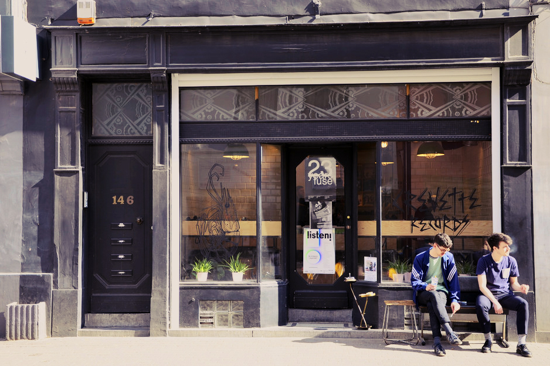

-
Balades Sonores
Definitely the best out there. Located in a old dusty building filled with vintage furniture in the heart of Brussels, just in front of the best music venue of the city, The Botanique, this store houses thousands of indie records from all around the world, as well as obscure underground labels from around the region. Classified in weird sections such as "Perfect for your sunday afternoon tea", "Chemistry lab music", or "Doing it backroom with sadness and experiments", the LP's are all wisely selected by the owner, being himself a music freak and playing in a local analog electronic music project called Monolithe Noir. The record store also organize local shows and art exhbitions.
-
Crevette Records
 Specialising in house, techno, minimal, disco and electro, with a smaller selection of funk, brazil, jazz, hiphop, this record store is actually also a really good record label. They also sell record table gear and other sutff. The store is housed in a beautiful, very Brussels-style building, in an uber-cool neighborhood, close to what Brooklyn would look like if it was located in Belgium. Caroline Music
This one is what we could call the mother of all record stores in Brussels. Open since the mid 60's, Caroline Music is the older wax reseller of the city, and mostly impress by its size. If you're looking for a new release, it will definitely be lying in one of their crates. Oh, and shhh, but if you learn to know them, you can even get some LPs a few days before their release date...*wink wink*.